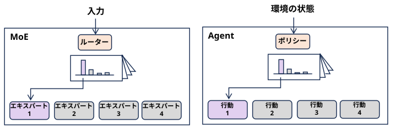

\[
\begin{array}{l}
\textbf{・ 入力によって確率分布を切り換える
} \\
\textbf{・ 切り替えた確率分布に従って、何かを選ぶ
}\\
\textbf{ところが似ている気がする・・・}
\end{array}
\]
MoEのルーターと強化学習エージェントのポリシーは似ていない？
(AIモード)MoE（Mixture of Experts）のルーターと、強化学習（RL）エージェントのポリシーは、概念的にも数学的にも非常に似ています。
どちらも「現在の状態（入力）に応じて、最も高い報酬（成果）が得られるアクション（専門家）を確率的に選択する」という条件付きの意思決定メカニズムだからです。
\[ \begin{array}{l | l | l} \hline & \textbf{MoEのルーター} & \textbf{強化学習エージェントのポリシー} \\ \hline \textbf{役割} & \text{入力トークンを適切なエキスパートに割り当てる} & \text{環境の「状態」に応じて最適な「行動」を選ぶ }\\ \hline \textbf{数理モデル} & \text{入力 x に対する各エキスパートの選択確率分布 } & \text{状態 } s \text{ に対する各行動の選択確率分布 } \\ & P(\text{expert} \mid x) & \pi(a \mid s) \\ \hline \textbf{目的} & \text{ネットワーク全体の損失（Loss）の最小化} & \text{累積報酬（Return）の最大化} \\ \hline \end{array} \]
本質は似ていますが、近年の大規模言語モデル（LLM）などで使われる標準的なMoEルーターと、一般的な強化学習ポリシーにはいくつか異なる点があります。
微分可能性と学習効率現在の多くのMoE（例：DeepSeekやMixture of Expertsの標準的な実装）では、強化学習を使わず、Softmax関数とロードバランシング損失（補助損失）を導入することで、通常の誤差逆伝播法（Backpropagation）でエンドツーエンドに直接学習できるように工夫されています。強化学習は学習の収束が不安定なため、効率を重視してこの形が主流になっています。
報酬の即時性強化学習は「数ステップ先の未来の報酬」を考慮して動くことが多い（遅延報酬）のに対し、MoEのルーターは基本的に「そのトークンにおけるそのレイヤーでの最適な割り当て」という即時的な最適化（Multi-armed Banditに近い性質）で動きます。
キャパシティ制約（ロードバランシング）強化学習のポリシーは、特定の強い行動だけをひたすら選び続けても問題ありません。しかしMoEのルーターの場合、特定のエキスパートに処理が集中するとハードウェアの計算効率が落ちる（エキスパート崩壊）ため、「全員に均等に仕事を振り分ける」という強い制約（バイアス）を課されて学習します。